'data.frame': 5182 obs. of 11 variables:
$ gender : chr "Male" "Male" "Female" "Female" ...
$ age : num 67 80 49 79 81 74 69 78 81 61 ...
$ hypertension : int 0 0 0 1 0 1 0 0 1 0 ...
$ heart_disease : int 1 1 0 0 0 1 0 0 0 1 ...
$ ever_married : chr "Yes" "Yes" "Yes" "Yes" ...
$ work_type : chr "Private" "Private" "Private" "Self-employed" ...
$ Residence_type : chr "Urban" "Rural" "Urban" "Rural" ...
$ avg_glucose_level: num 229 106 171 174 186 ...
$ bmi : num 36.6 32.5 34.4 24 29 27.4 22.8 24.2 29.7 36.8 ...
$ smoking_status : chr "formerly smoked" "never smoked" "smokes" "never smoked" ...
$ stroke : int 1 1 1 1 1 1 1 1 1 1 ...Inuk
로지스틱 회귀분석을 통한 뇌졸증 발병 예측
- 데이터 출처: https://www.kaggle.com/datasets/zzettrkalpakbal/full-filled-brain-stroke-dataset1. EDA
1-1. 데이터 불러오기
데이터 랜덤으로 섞기
1-2. 데이터 정보 확인
데이터 요약
결측치 확인
[1] 0dependent variable = stroke 비율 확인
0 1
0.944423 0.055577 1-3. 데이터 전처리
범주형데이터 factor로 변경
'data.frame': 5182 obs. of 11 variables:
$ gender : Factor w/ 2 levels "Female","Male": 2 2 1 1 2 2 1 1 1 1 ...
$ age : num 67 80 49 79 81 74 69 78 81 61 ...
$ hypertension : Factor w/ 2 levels "0","1": 1 1 1 2 1 2 1 1 2 1 ...
$ heart_disease : Factor w/ 2 levels "0","1": 2 2 1 1 1 2 1 1 1 2 ...
$ ever_married : Factor w/ 2 levels "No","Yes": 2 2 2 2 2 2 1 2 2 2 ...
$ work_type : Factor w/ 4 levels "children","Govt_job",..: 3 3 3 4 3 3 3 3 3 2 ...
$ Residence_type : Factor w/ 2 levels "Rural","Urban": 2 1 2 1 2 1 2 2 1 1 ...
$ avg_glucose_level: num 229 106 171 174 186 ...
$ bmi : num 36.6 32.5 34.4 24 29 27.4 22.8 24.2 29.7 36.8 ...
$ smoking_status : Factor w/ 4 levels "formerly smoked",..: 1 2 3 2 1 2 2 4 2 3 ...
$ stroke : Factor w/ 2 levels "0","1": 2 2 2 2 2 2 2 2 2 2 ...1-4. 데이터 시각화
수치형 데이터 boxplot 그려보기
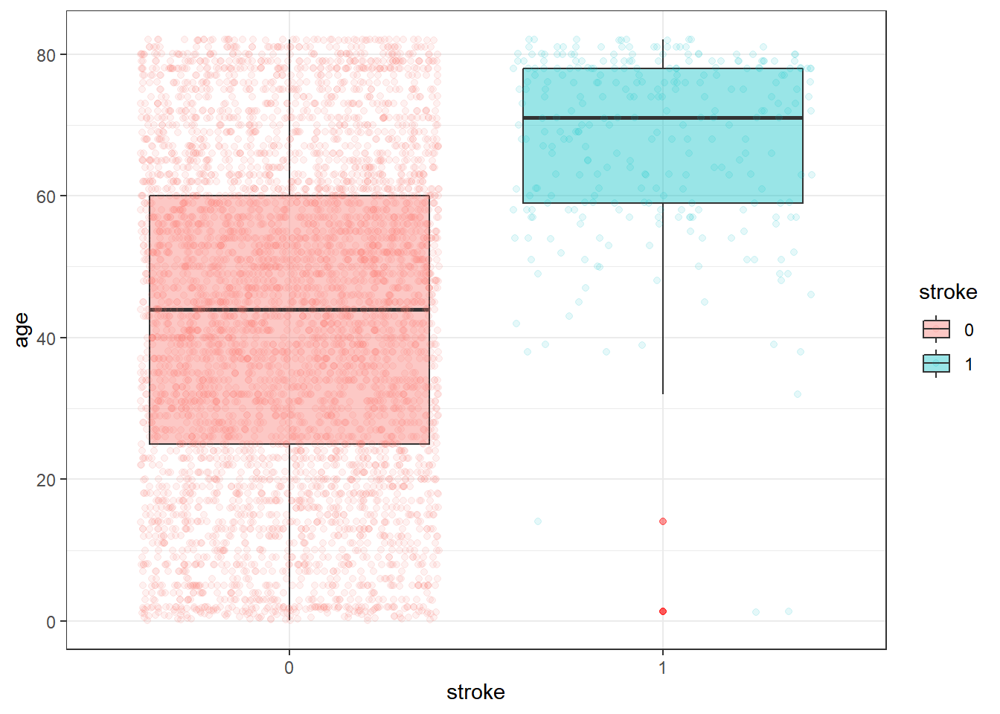
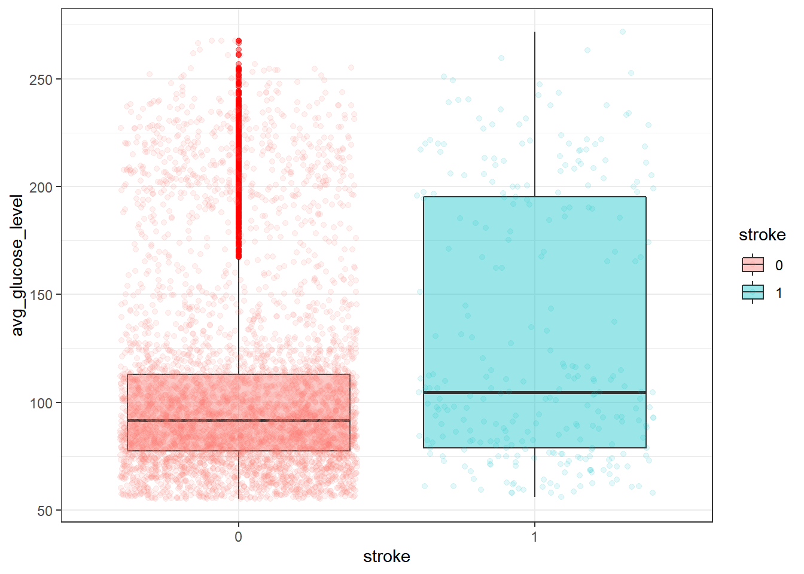
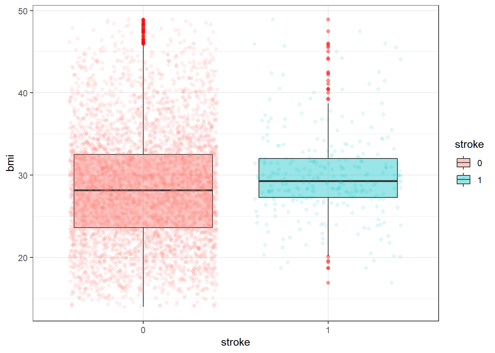
cdplot으로 밀도 차이 확인
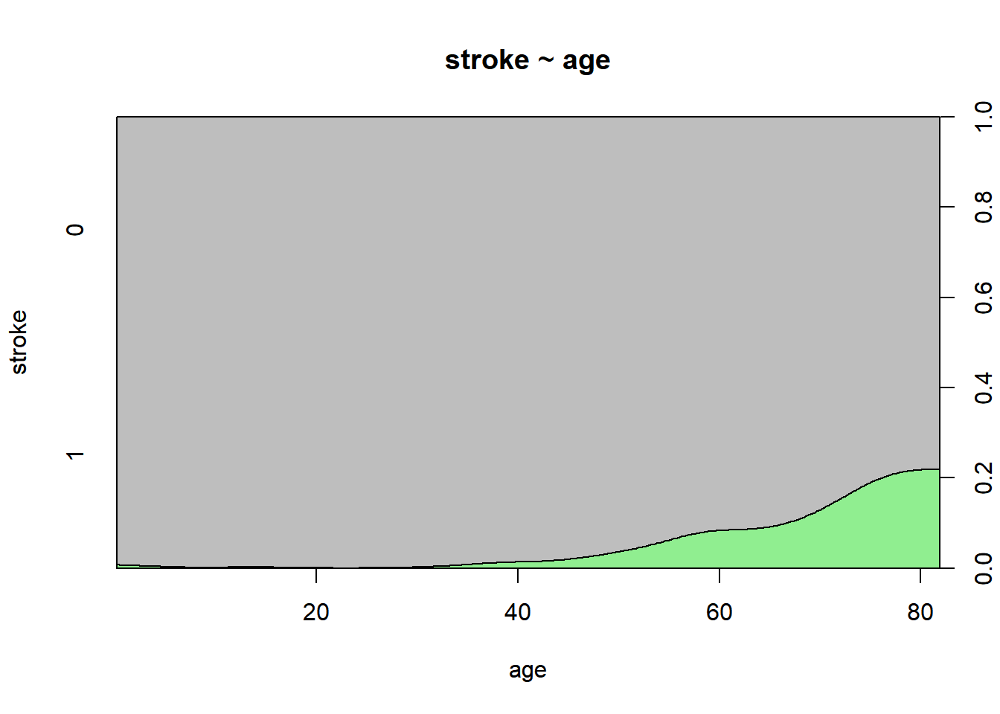
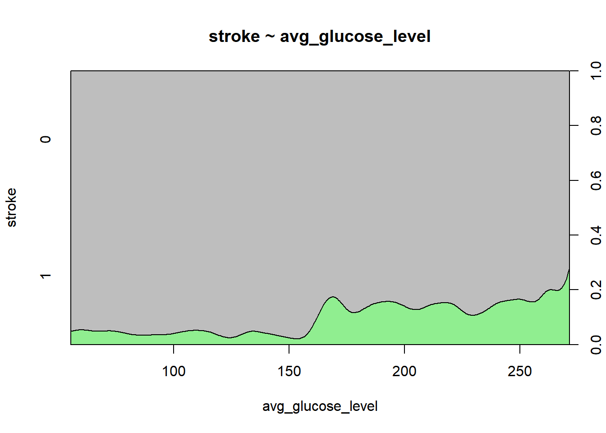
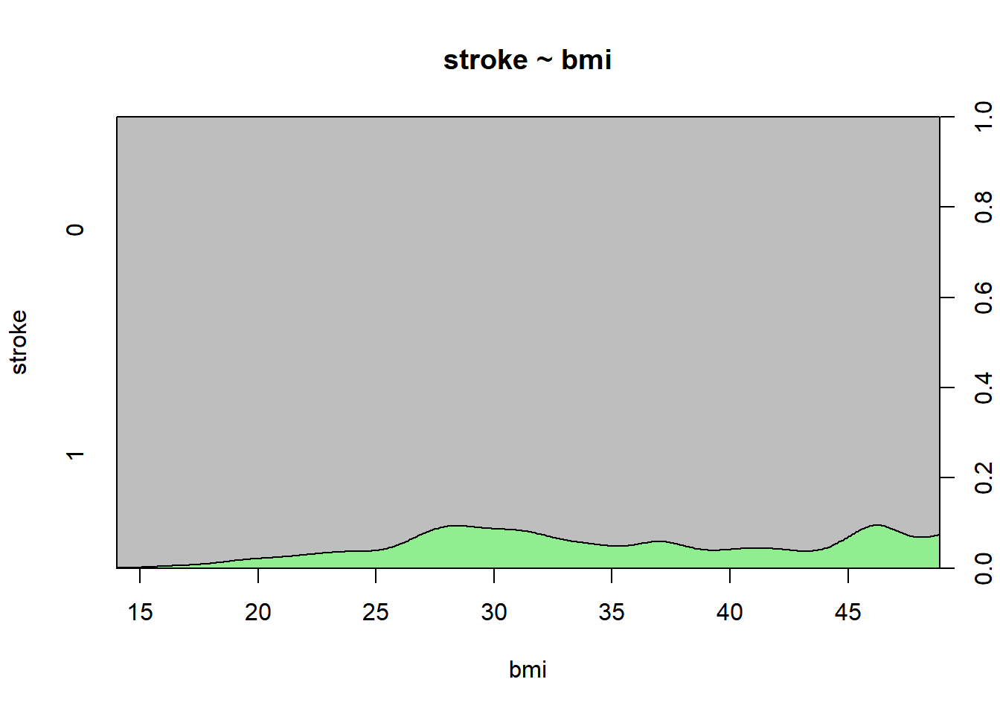
mosaicplot으로 stroke와 범주형 데이터 비교
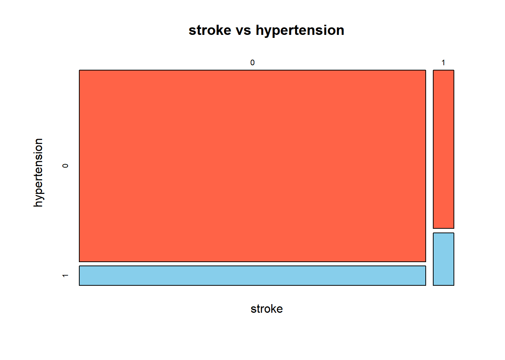
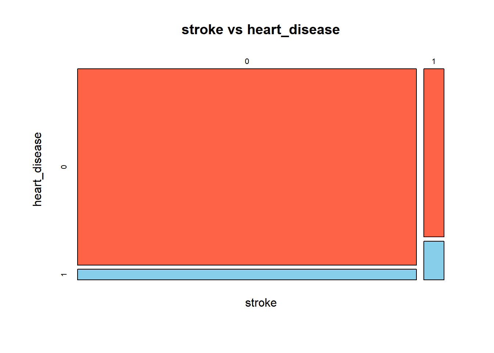
2. 로지스틱 회귀분석
2-1. 모델 생성
train, test 데이터 나누기
set.seed(1500)
brain <- brain[sample(nrow(brain)), ]
brain.train <- brain[1:3500, ]
brain.test <- brain[3501:5182, ]로지스틱 모델 생성
Call:
glm(formula = stroke ~ ., family = binomial(link = "logit"),
data = brain.train)
Deviance Residuals:
Min 1Q Median 3Q Max
-1.04913 -0.34864 -0.18010 -0.08695 3.14404
Coefficients:
Estimate Std. Error z value Pr(>|z|)
(Intercept) -20.785207 498.787384 -0.042 0.9668
genderMale 0.065179 0.161084 0.405 0.6858
age 0.078602 0.006631 11.853 <2e-16 ***
hypertension1 0.296221 0.187866 1.577 0.1148
heart_disease1 0.040440 0.226809 0.178 0.8585
ever_marriedYes -0.402017 0.242707 -1.656 0.0976 .
work_typeGovt_job 12.901792 498.787463 0.026 0.9794
work_typePrivate 12.980979 498.787431 0.026 0.9792
work_typeSelf-employed 12.777522 498.787473 0.026 0.9796
Residence_typeUrban 0.017162 0.157608 0.109 0.9133
avg_glucose_level 0.002492 0.001391 1.791 0.0732 .
bmi 0.016711 0.014710 1.136 0.2559
smoking_statusnever smoked -0.150756 0.201360 -0.749 0.4540
smoking_statussmokes 0.066221 0.248867 0.266 0.7902
smoking_statusUnknown 0.009469 0.231456 0.041 0.9674
---
Signif. codes: 0 '***' 0.001 '**' 0.01 '*' 0.05 '.' 0.1 ' ' 1
(Dispersion parameter for binomial family taken to be 1)
Null deviance: 1505.1 on 3499 degrees of freedom
Residual deviance: 1186.5 on 3485 degrees of freedom
AIC: 1216.5
Number of Fisher Scoring iterations: 18odds ratio
(Intercept) genderMale
9.399379e-10 1.067350e+00
age hypertension1
1.081774e+00 1.344767e+00
heart_disease1 ever_marriedYes
1.041269e+00 6.689691e-01
work_typeGovt_job work_typePrivate
4.010302e+05 4.340778e+05
work_typeSelf-employed Residence_typeUrban
3.541665e+05 1.017310e+00
avg_glucose_level bmi
1.002496e+00 1.016852e+00
smoking_statusnever smoked smoking_statussmokes
8.600572e-01 1.068463e+00
smoking_statusUnknown
1.009514e+00 stepwise logistic regression 수행
Call:
glm(formula = stroke ~ age + hypertension + avg_glucose_level,
family = binomial(link = "logit"), data = brain.train)
Deviance Residuals:
Min 1Q Median 3Q Max
-0.99725 -0.34530 -0.18035 -0.08076 3.14434
Coefficients:
Estimate Std. Error z value Pr(>|z|)
(Intercept) -7.572292 0.418861 -18.078 <2e-16 ***
age 0.075364 0.005954 12.658 <2e-16 ***
hypertension1 0.282882 0.185302 1.527 0.1269
avg_glucose_level 0.002947 0.001325 2.225 0.0261 *
---
Signif. codes: 0 '***' 0.001 '**' 0.01 '*' 0.05 '.' 0.1 ' ' 1
(Dispersion parameter for binomial family taken to be 1)
Null deviance: 1505.1 on 3499 degrees of freedom
Residual deviance: 1194.2 on 3496 degrees of freedom
AIC: 1202.2
Number of Fisher Scoring iterations: 7odds ratio
(Intercept) age hypertension1 avg_glucose_level
0.0005145116 1.0782763586 1.3269483211 1.0029515034 2-2. 모델 테스트
odds ratio 시각화
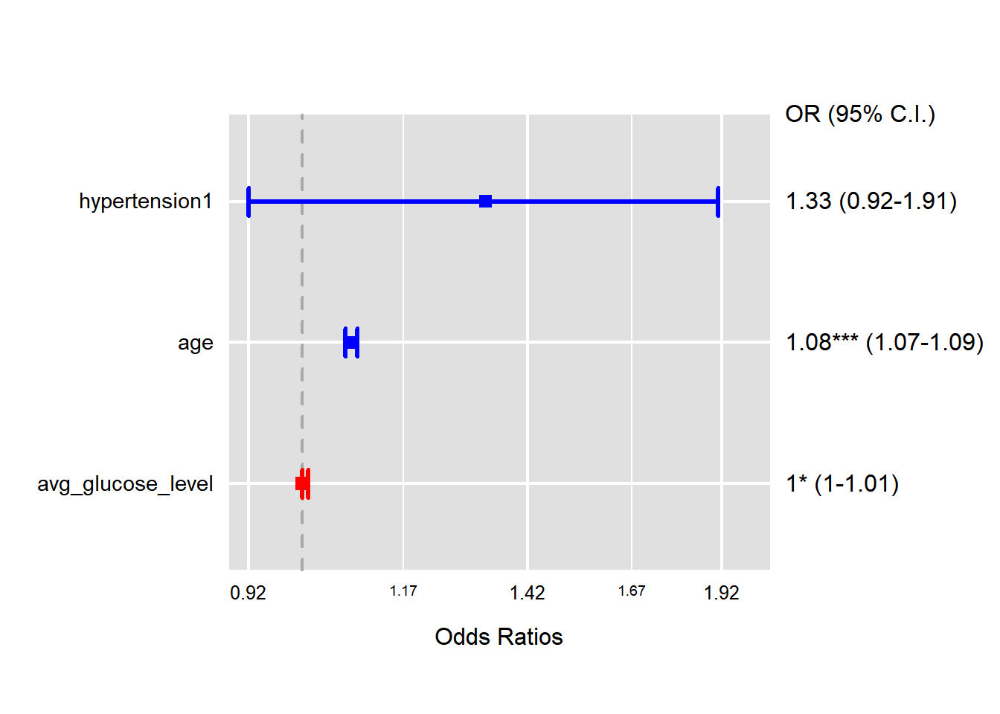
예측테스트(임계값 0.5)
혼동행렬 확인
Warning in confusionMatrix.default(predict_A, brain.train$stroke): Levels are
not in the same order for reference and data. Refactoring data to match.Confusion Matrix and Statistics
Reference
Prediction 0 1
0 3305 195
1 0 0
Accuracy : 0.9443
95% CI : (0.9362, 0.9517)
No Information Rate : 0.9443
P-Value [Acc > NIR] : 0.519
Kappa : 0
Mcnemar's Test P-Value : <2e-16
Sensitivity : 1.0000
Specificity : 0.0000
Pos Pred Value : 0.9443
Neg Pred Value : NaN
Prevalence : 0.9443
Detection Rate : 0.9443
Detection Prevalence : 1.0000
Balanced Accuracy : 0.5000
'Positive' Class : 0
다중 공산성 확인
age hypertension avg_glucose_level
1.039325 1.040489 1.023991 2-3. ROC Curve를 통해서 최적의 임계값 구하기
- 참고 사이트
- https://www.theissaclee.com/post/logistic-regression-beta/
- https://www.verywellhealth.com/negative-predictive-value-3132879방법1. Sensitivity, Specificity
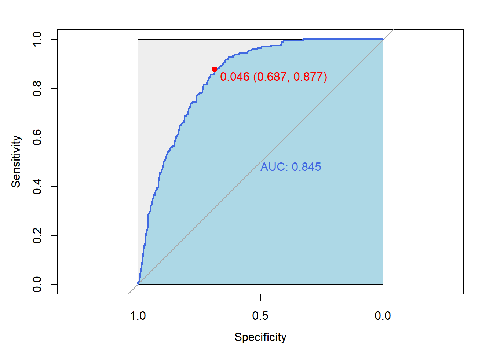
방법2. False positive rate, True positive rate
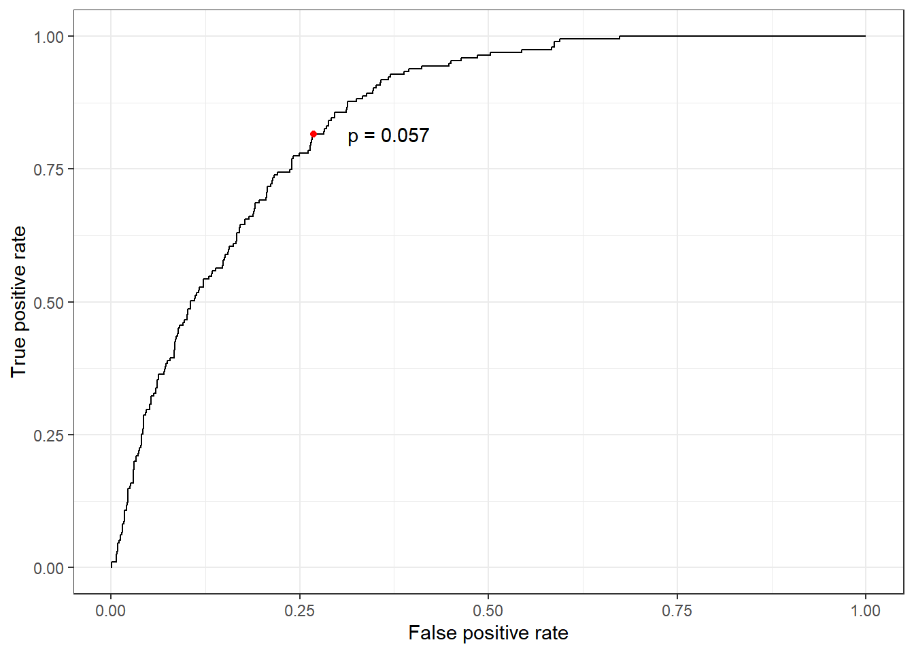
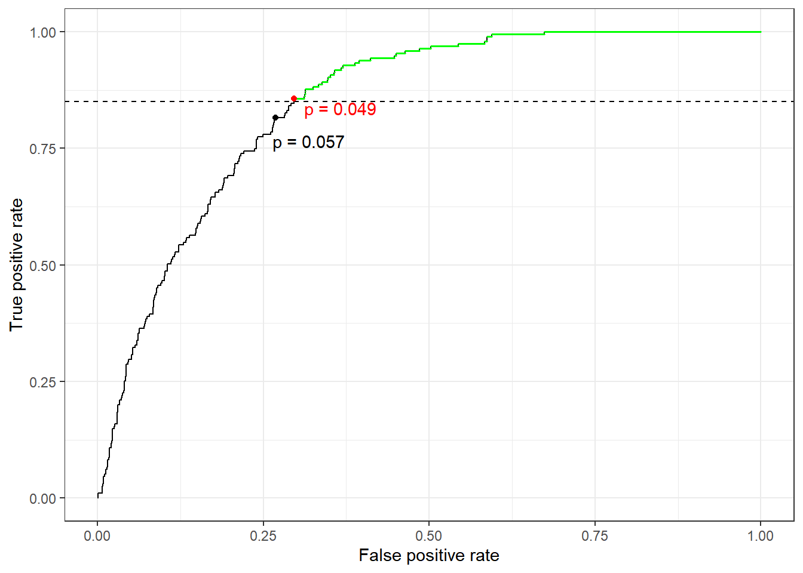
새로운 임계값으로 예측값 확인
Confusion Matrix and Statistics
Reference
Prediction 0 1
0 2315 28
1 990 167
Accuracy : 0.7091
95% CI : (0.6938, 0.7242)
No Information Rate : 0.9443
P-Value [Acc > NIR] : 1
Kappa : 0.1677
Mcnemar's Test P-Value : <2e-16
Sensitivity : 0.7005
Specificity : 0.8564
Pos Pred Value : 0.9880
Neg Pred Value : 0.1443
Prevalence : 0.9443
Detection Rate : 0.6614
Detection Prevalence : 0.6694
Balanced Accuracy : 0.7784
'Positive' Class : 0
2-4. 만든 모델로 test데이터 예측
Confusion Matrix and Statistics
Reference
Prediction 0 1
0 1097 15
1 492 78
Accuracy : 0.6986
95% CI : (0.676, 0.7204)
No Information Rate : 0.9447
P-Value [Acc > NIR] : 1
Kappa : 0.155
Mcnemar's Test P-Value : <2e-16
Sensitivity : 0.6904
Specificity : 0.8387
Pos Pred Value : 0.9865
Neg Pred Value : 0.1368
Prevalence : 0.9447
Detection Rate : 0.6522
Detection Prevalence : 0.6611
Balanced Accuracy : 0.7645
'Positive' Class : 0